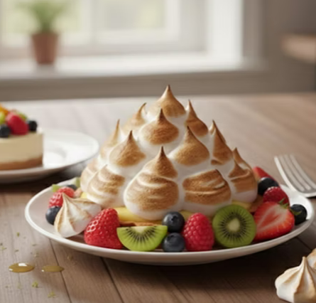
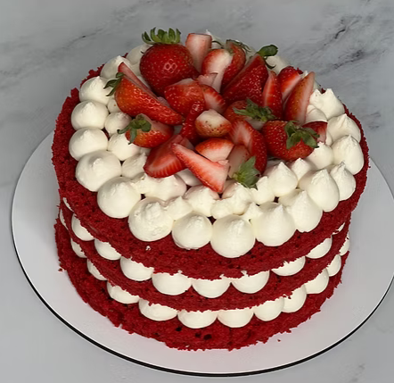
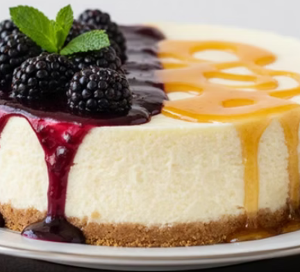
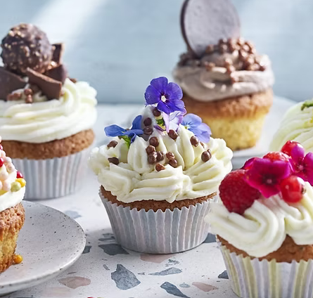
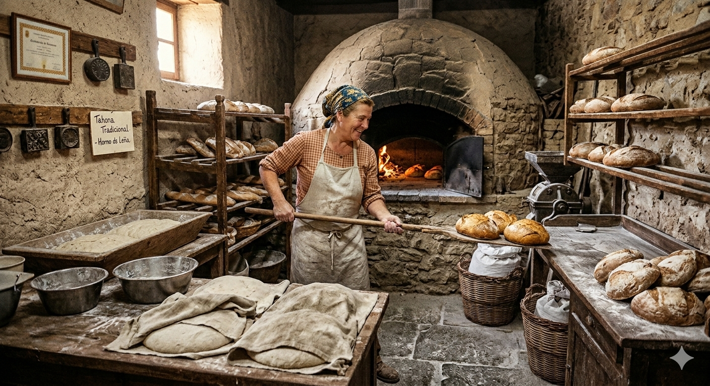
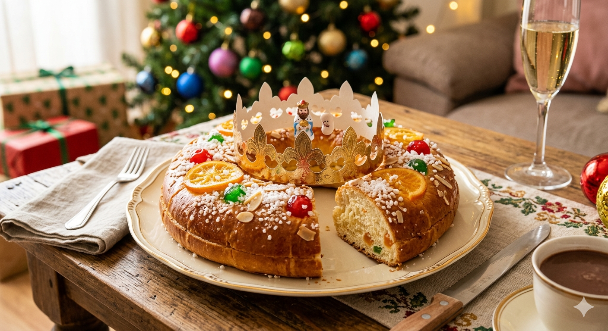
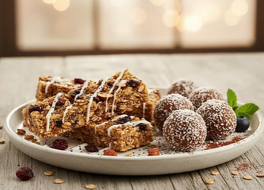
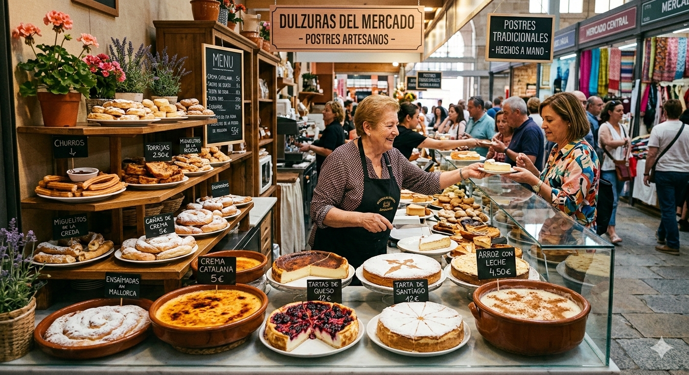

4 generaciones de tradición familiar. Sus pestiños y mantecados han endulzado las navidades sevillanas durante más de 80 años.
Conoce su historiaPremio a la artesanía 2025. Su bienmesabe es considerado el mejor de La Gomera, elaborado con almendras locales.
Conoce su historiaEmprendedora tradicional. Convirtió la receta familiar de turrón en un negocio artesanal con proyección internacional.
Conoce su historiaMantiene vivo el horno de leña familiar donde elabora recetas del siglo XIX, como las tradicionales perrunillas.
Conoce su historia
Masa frita bañada en miel, típica de Semana Santa y ferias. Tiempo: 45 min | Dificultad: Fácil
Ver receta
Dulce de almendras y miel, blando y aromático, rey de la Navidad. Tiempo: 90 min | Dificultad: Media
Ver receta
Crema de almendras, limón y yema, herencia de la tradición conventual. Tiempo: 60 min | Dificultad: Media
Ver receta
Dulce de almendras y azúcar con forma de figuritas, tradición navideña. Tiempo: 50 min | Dificultad: Fácil
Ver recetaEn la cultura española, la transmisión de conocimientos culinarios ha sido históricamente una labor femenina. Las madres, abuelas y tías han sido las responsables de preservar las recetas familiares, adaptándolas a los recursos disponibles y transmitiéndolas oralmente. Este sitio web coloca a estas mujeres en el centro, no como figuras anónimas, sino como protagonistas de una historia que merece ser contada.
Mortero de barro
La tahona
El azahar
Flor del almendro
El arte de hacer pestiños
Mujeres que mantienen viva la tradición



